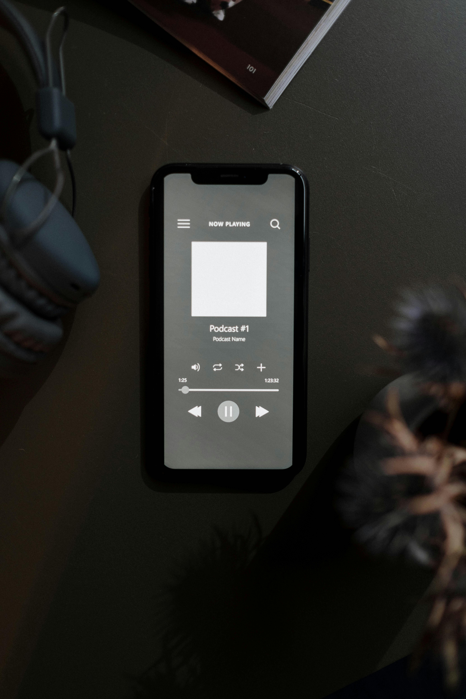

Hello There! I'm Lin Belmont
E esse é o meu espaço pra falar de tecnologia, rotina, vida boa e tudo que acontece no meio do caminho.
Vim da Contabilidade, fiz uma virada que assustou até a mim mesma, e hoje dirijo a Arkos.io, empresa especializada em desenvolvimento de software e experiência digital. Não foi um caminho reto — e é exatamente por isso que vale contar.
Por aqui você vai encontrar tecnologia, rotina, saúde, viagens e umas histórias que espero que façam você se sentir menos sozinha no seu próprio caminho.
Diretora da Arkos.io 🤍

Minha Missão
Quando pensei nesse espaço, não queria criar mais um site bonito e vazio.
Queria um lugar onde tecnologia, rotina e vida real coexistissem sem fingimento. Onde fosse possível falar de carreira sem ignorar o corpo, de produtividade sem abrir mão de viver, de crescimento sem esquecer de onde a gente veio.
Minha missão aqui é simples: mostrar que não existe uma única versão certa de você. Existe a versão que você decide construir — um dia, uma escolha, uma página de cada vez.
Bem-vinda ao começo da sua próxima versão.
Arkos
A tecnologia certa pode transformar um negócio inteiro — e a gente sabe exatamente como fazer isso acontecer.
A Arkos nasceu da crença de que software bem feito não é luxo, é estratégia. Desenvolvemos soluções sob medida, criamos experiências digitais que fazem sentido pro usuário e entregamos projetos que realmente funcionam no mundo real.
Se você tem um projeto na cabeça ou um problema que ainda não encontrou solução, esse pode ser o começo de algo muito bom.


Lifestyle
Sabe aquela vida que você imagina quando pensa em "Quando eu tiver tempo"?
Aqui a gente não espera ter tempo — a gente aprende a construir uma rotina que caiba os sonhos, o trabalho, o corpo e ainda sobre espaço pra viver de verdade.
Tecnologia, fitness, viagens e o dia a dia sem filtro. Vem comigo — prometo que vale o clique.